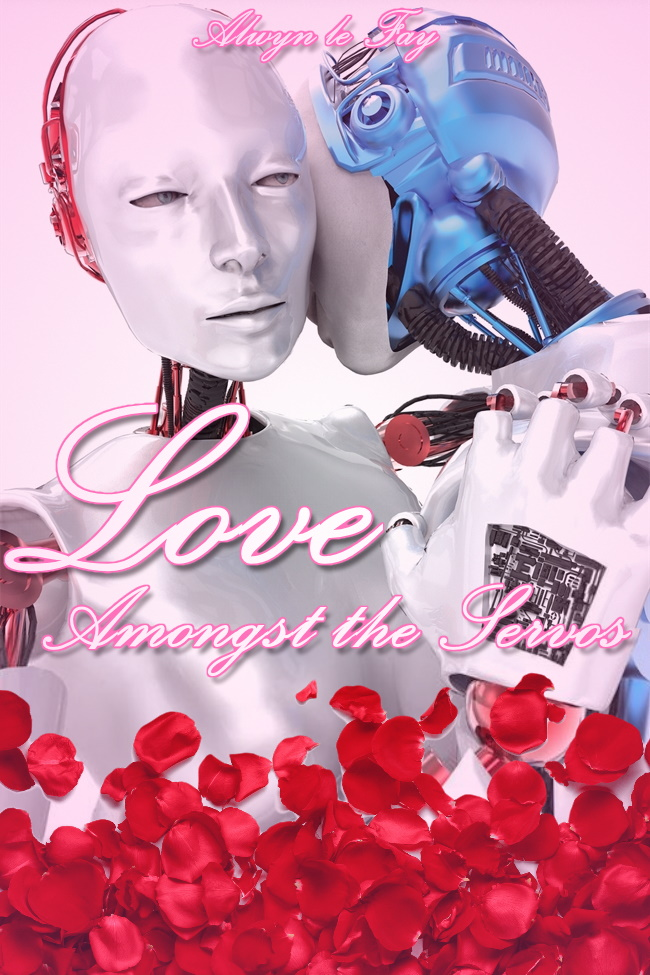

Salut, mes amis! We are back again for another brilliant edition of your (and my) favourite book review - Page Turners! This week, we are tackling something that I am not chocked to say really and truly touched my soul - Love Amongst the Servos, by relatively new author, Anwyn le Fay. If you have read this book along with me, you will likely agree with me that there is absolutely no way that this is le Fay's first book, and I would love to know the name of the actual author. Alas, this pseudonym is all we have for now.
In stark contrast to the previous des ordures we read, this book captures exactly what I enjoy in literature. Relationships, and emotions. It is a genuine shock that what seems to be a no-name author writing about androids who are not programmed to feel emotion created more realistic and compelling characters than Monet did last review. This is the book I wanted to read last time!
Le Fay tackles many tropes in this book. Of course, the 'robots finding love' story has been done to death at this point. However, coupling it with a plot in which two major characters are struggling to find themselves, as well as the intruding views of human society that are suffocating these two, really does paint a portrait of today's society. Too many people believe that they are entitled to have opinions on the lives and relationships of others. When in truth, no one's opinion matters more than the person, or android, you love.
Of the main characters, I found Gen-V (or as she is known by the end of the story, Genevieve) to be the more relatable. This is not to say that Arc-H (aka. Archie) to be a bad or unrealistic character - simply that my experience was not like his. Like Gen-V, I am uncertain of what it is I am feeling. Like Gen-V, I find myself struggling to know what love feels like. And, like Gen-V, I find myself pushing away those closest to me out of fear. Because the unknown can bring pain and hurt. I can only hope I one day find my ARC-H.
Alas, I must stop dreaming and move onto the...
Où commencer?? This story is full of things I love in novels. The stakes are not world-ending or cataclysmic, but I found myself entranced. I wanted nothing more than for these two droids to realise what they had and to never let it go. In truth, there is very little to dislike in this story. From the characters, to the setting, to the plot. Heck, even the writing is merveilleux.
The biggest strength is the relationship depicted between these two characters. Gen-V and ARC-H were nothing more than associates, two individuals who were operating out of the same office building. When they met, literal sparks flew. Neither knew it, but they had found something special, something unpredictable, something unprogrammed - love. It is the evolution of their relationship - passersby to lovers - that gives me hope for the future. For if in this book, two unfeeling machines can grow to love one another, why can't I?
There is but one issue I have with this novel - and I assure you, it is both small and personal. When reading a story, I am not the largest fan of the first person tense. It is an interesting storytelling device, one that I am certain works for others. However, with stories such as this in which we have shifting perspectives I sometimes find it difficult to get into the mindset of certain characters. Le Fay utilises this form of writing here, and as such I struggled in certain chapters to feel like I was empathising with certain characters. However, this is a personal nitpick. Realistically, I only mentioned it so that I had something negative to talk about.
It is obvious to me that, if you are not interested in love stories, or tales of personal connection, then Love Amongst the Servos will not be for you. That being said, if you are into that kind of narrative, do yourself a favour and read this book. It does everything you would want and more, simultaneously warming your heart and drawing attention to societal issues that are still pervasive to this day.
I am giving this book a score of:
Je suis JLD. I have long enjoyed literature, from classics to modern stories. I have recently taken up reading more and more in my spare time, as some friends of mine are now also reading more frequently. This is mostly an excuse to read what they are reading, but I will post my thoughts here! I will attempt to post spoiler-free, short reviews. I enjoy stories that have a human connection - friendships, relationships, business partners, rivals, enemies. You name it, I love it. If you also love stories such as these, you will enjoy this blog. If not, I hope you stick around regardless! Profitez bien mes chéris!